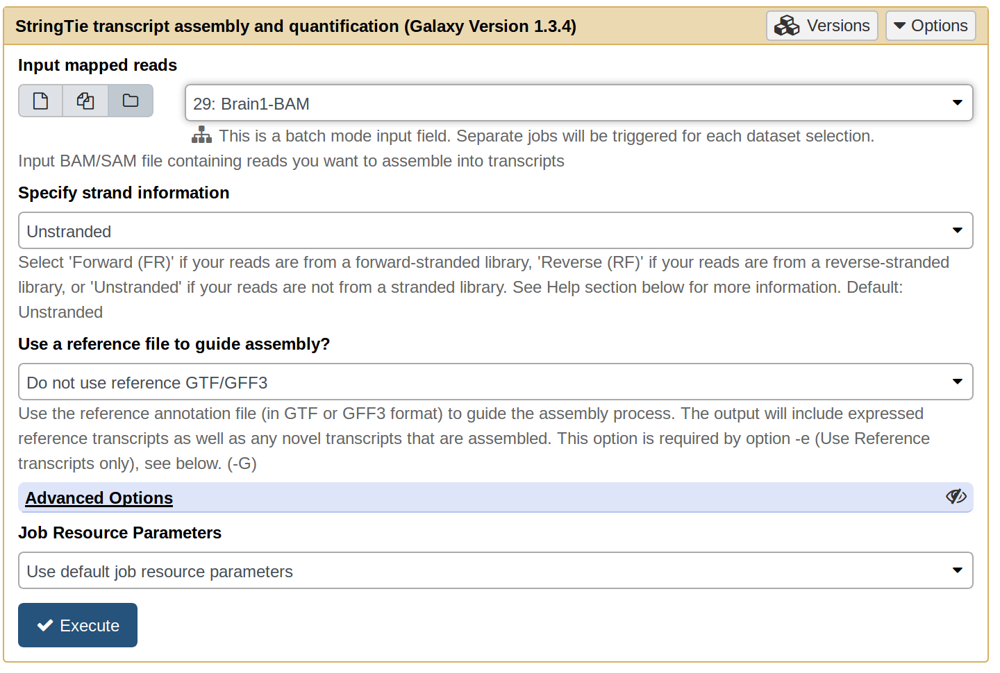
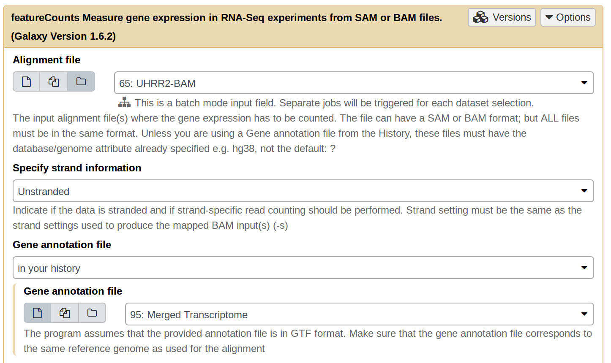
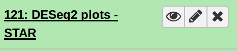

Bioinformatics Tutorials using Galaxy
1.
Making frequent use of the 'History' tab within Galaxy will enable you to accurately manage the workflow of whatever pipeline you are managing. To start off, we will first import the data necessary for this step. To do that, navigate to the following link: https://usegalaxy.org/u/niemasd/h/rna-seq-methods and click 'Import history'. Now let's name the imported history "Diff. RNA Expression w/ STAR".

2.
Given all of these reads, it is a good idea to first organize the data in a way that makes sense to you. For me, that involves rewriting the names of each fastq file to something more meaningful to me. To do this, click on each file name and then click on the pencil symbol to edit their attributes. While not necessary, as the tutorial proceeds we will be making a bunch of files in Galaxy's history and it will be useful to have clearly labeled files. My renamed files appear here.
3.
The first step is to align these reads to the human reference genome. For this example, we will make use of the hg19 reference genome. We will use STAR to align the reads. To make use of the tool, use the Search Tools box on the left hand panel to find STAR. Click on STAR to bring up the options for the tool. Use the paired-end as a collection option and choose paired end reads. Finally, select the hg19 reference genome within the reference genome panel and hit execute. Do this for each collection of reads, and rename each file after STAR finishes running.

4.
The next step is to use StringTie to assemble the alignments into potential transcripts. To do this, search for StringTie on the lefthand panel and select the tool. Next, change the input to a dataset collection and select one of the created BAM files. Hit execute. Repeat this process for each of the BAM files generated from Step 3.

5.
After renaming the outputted files to something more descriptive, we have to generate a unified transcriptome assembly. Before we can do that step, we must merge all of the disparate assemblies into one dataset. To do that, navigate to the tool panel and search for 'Merge Collections.' Click on the tool and add each of the StringTie results to merge into a single collection list of datasets.
6.
We now need to retreive a copy of the genome annotation file for the hg19 genome assembly. This will be used by StringTie merge as a reference annotation file to quantify the number of transcripts. To do this, navigate to http://genome.ucsc.edu/cgi-bin/hgTables?command=start and choose the hg19 assembly. Send the output to Galaxy.
7.
We are finally ready to run StringTie merge. To do this, navigate to the lefthand tools panel and search for StringTie merge. Click on the tool, and select the output of Step 5 in the Transcripts input. Select the outputted UCSC GTF file as the Reference annotation. Hit execute with the rest of the options untouched. Rename the output as Merged Transcriptome.
8.
To quantify the number of transcripts in each sample, we will make use of 'Feature Counts', another tool available in Galaxy. Select as the alignment file, a collection of the STAR alignments. The Gene Annotation File should be the Merged Transcriptome (output of StringTie merge). Additionally, click on 'Options for paired-end reads.' For the option of 'Count fragments instead of reads,' change the value to 'Enabled, fragments (or templates) will be counted.' Execute this command. You will need to do this for each of the 4 alignment collections.

9.
The final step is to run DEseq2 to quantify the differential expression between the UHRR data and the Brain data. To do this, select the DEseq2 tool and input 4 factor levels. For each factor level label it from the set of samples (UHRR1, UHRR2, Brain1, and Brain2) and for each designate the appropriate featureCounts file. Additionally, select "Yes" for the options "Output Normalized Counts Table" and "Output all levels vs all levels of primary factor (use when you have >2 levels for primary factor)." Label the resultant files with the STAR pipeline used to generate them.
10.
Now download and inspect the results from the plot file. Spend some time thinking about the heatmap on the 2nd page, then proceed to Step 11.

11.
Compare this heatmap to the heatmap produced from the HiSAT2 pipeline. What does this comparison tell you about the differences between STAR/HiSAT2? Go back to the log files produced by both alignment runs, what are the significant differences? Why do you think people use one tool over the other? You may find my run's plots here in case you ran into trouble: DEseq2 Results.